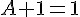
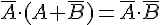
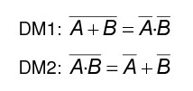

Electrónica digital
3.3. Álgebra de Boole
El álgebra de Boole es una estructura matemática, que cuenta con dos números (0 y 1) y tres operaciones (suma, producto y negación).
Parte de unos postulados iniciales, de los que se pueden deducir leyes, teoremas y otras consecuencias. Veámoslos:
Postulados del Álgebra de Boole
Un postulado es un enunciado matemático que no necesita demostración. Es algo así como un punto de partida. En el Álgebra de Boole tenemos los siguientes:
- Postulado 1. El elemento identidad de la suma es el "0". (A + 0 = A)
- Postulado 2. El elemento de identidad del producto es el "1". (A · 1 = A)
- Postulado 3. La suma es conmutativa A + B = B + A
- Postulado 4. El producto es conmutativo: A · B = B · A
- Postulado 5. La suma es asociativa: (A + B) + C = A + (B + C)
- Postulado 6. El producto es asociativo: (A · B) · C = A · (B · C)
- Postulado 7. El producto es distributivo respecto de la suma:
A · (B + C) = (A · B) + (A · C)
- Postulado 8. La suma es distributiva respecto del producto:
A + (B · C) = (A + B) · ( A + C).
- Postulado 9. Para cada valor A existe un valor Ā tal que A· Ā = 0 y A + Ā = 1. Éste valor es el complemento lógico o negado de A.
- Postulado 10. El álgebra de Boole es cerrada bajo las operaciones suma, producto y negación.
Teoremas del Álgebra de Boole
Un teorema es una proposición matemática que se puede demostrar a partir de los postulados que se han enunciado anteriormente.
En el Álgebra de Boole tenemos los siguientes teoremas:
- Teorema 1:

-
Teorema 2:

- Teorema 3:

- Teorema 4: 
- Teorema 5:

- Teorema 6:

- Teorema 7:

- Teorema 8:

- Teorema 9: 
- Teorema 10:

Leyes de De Morgan
Son dos leyes importantísimas dentro del Álgebra de Boole. Afirman lo siguiente:

Obra publicada con Licencia Creative Commons Reconocimiento No comercial Compartir igual 4.0